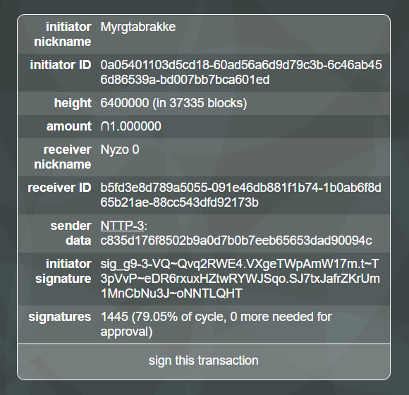

Nyzo's cycle account is a substantial asset to Nyzo, and responsible stewardship of the cycle fund is necessary to ensuring the sustainability of Nyzo.
The current cycle-transaction mechanism is functional but impractical. This proposal seeks to improve it in several ways.
Please create a cycle transaction for "NTTP-3" to indicate support for the entire proposal. Please create a cycle transaction with a more precise identifier (e.g., "NTTP-3/1" or "NTTP-3/2") to indicate support for an item only.
NTTP-3/1: we propose immediately storing proposed cycle transactions and cycle votes on the blockchain. The ability to cast negative ("no") votes would also be added, though they would not affect the threshold required for approval. The tally of votes would be maintained in the balance list. When a cycle transaction receives enough votes, it would be processed immediately.
NTTP-3/2: we propose reducing the threshold for cycle-transaction approval from >75% to >50% of the current cycle.
NTTP-3/3: we propose limiting the sum of cycle transactions processed in any 10,000-block period to no more than ∩100,000. This, combined with NTTP-1, would allow the cycle to avoid large cycle-fund losses in the case of widespread compromise of cycle aliases. If this and NTTP-3/1 are both implemented, approved transactions would be processed as soon as the 10,000-block window allows, but aliases could be changed within that window to revoke approval and prevent large numbers of malicious transactions from being processed.
NTTP-3 was approved by the cycle in a cycle transaction from Myrgtabrakke (0a05401103d5cd18-60ad56a6d9d79c3b-6c46ab456d86539a-bd007bb7bca601ed) to Nyzo 0 (b5fd3e8d789a5055-091e46db881f1b74-1b0ab6f8d65b21ae-88cc543dfd92173b). The signatures for this transaction will be stored on the blockchain as generic metadata. This will ensure that proof of the transaction will be available even if the transaction is not successfully processed into the blockchain.
Links to the on-chain metadata of the transaction will be posted here.
